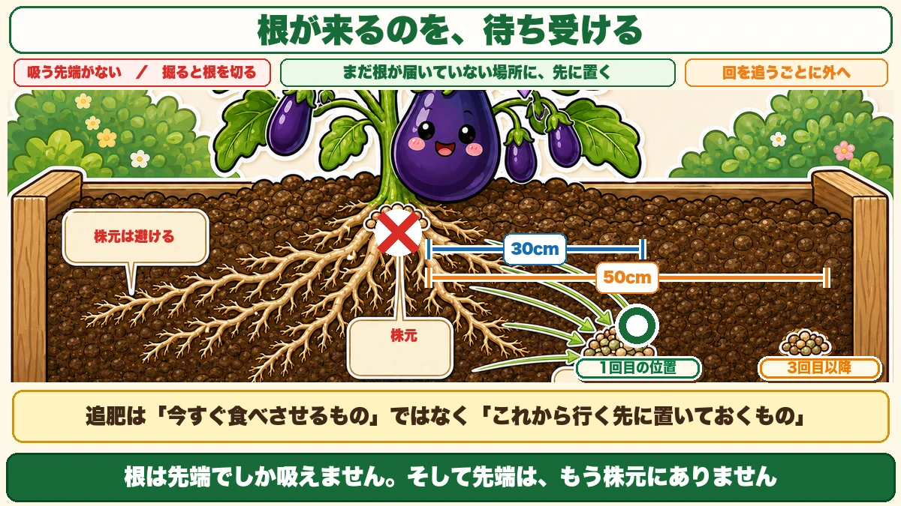
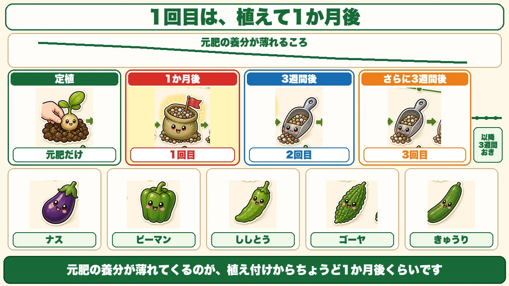
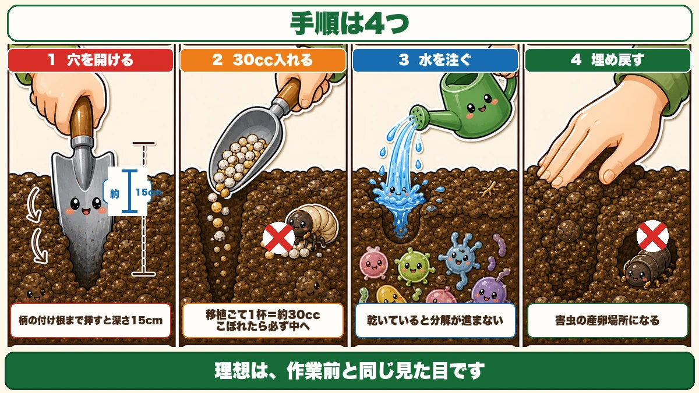
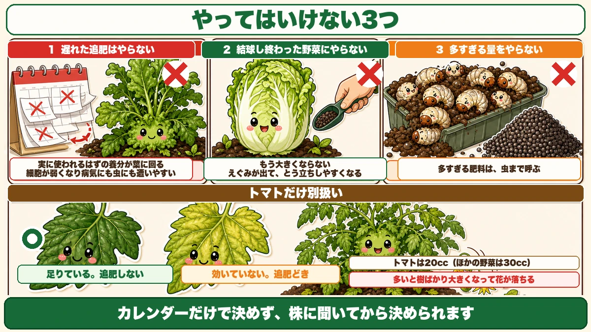

Never feed at the base of the plant 🍆 Put it where the roots are going, not where they've been

🍆 "You just scatter it round the plant, don't you?"
🍆 "I can never remember when it's due."
🍆 "I keep feeding and it still isn't growing."
Hello, I'm Eiko. Eight years of growing vegetables organically and without pesticides, and a teaching licence in science.
Feeding during the season is, I think, the job people do most vaguely. I certainly did.
The headline:
Don't put the feed at the base of the plant.
Put it about 30 cm (12 in) out from the roots, into ground the roots haven't reached yet. The reason follows from something simple: a root only absorbs at its tip.
Why the base is the wrong place

What this diagram says （図解の文字）
- Wait for the roots to arrive
- "No absorbing tip here" ／ "digging here cuts roots"
- "Put it, in advance, where the roots haven't reached" ／ "move further out each time"
- ✗ base of plant ／ ○ first position, 30 cm out ／ third feed onward, 50 cm
- "Feeding isn't a meal served now — it's a meal left where the plant is heading"
The root tips are nowhere near the stem
A root can't absorb along the parts it has already grown. Only the tip takes anything up.
So where are the tips a month after planting? Not at the base. They've grown outward and outward, out to the shoulders of the ridge.
Putting fertiliser at the base is laying a meal where there's no mouth.
And digging there cuts the roots
There's real damage too. You make a hole with a trowel — and digging close to the stem severs the roots growing there.
Trying to feed the plant, you reduce it. Not much of a trade.
Feed ahead of the roots
The right way to think about it: place the feed where the roots have not yet arrived.
They keep growing. A few weeks later the advancing tips reach that spot — and the meal is waiting.
Feeding isn't something to eat now. It's something left along the route.
When to do it

What this diagram says （図解の文字）
- The first feed is one month after planting — "about when the base fertiliser starts to run thin"
- planting → "base fertiliser only" ／ 1 month later → 1st ／ 3 weeks later → 2nd ／ 3 weeks more → 3rd ／ "then every 3 weeks"
- Aubergine ／ pepper ／ chilli ／ bitter gourd ／ cucumber
First feed: a month after planting out
You put base fertiliser into the bed when you built it. That runs thin roughly a month after planting — so that's when the first feed goes on. Everything else counts from there.
After that, every three weeks
- Planting — base fertiliser only
- One month later — first feed
- Three weeks later — second
- Three weeks later — third
- Then every three weeks for as long as you're picking
Aubergine, sweet pepper, chilli, bitter gourd and cucumber can all be treated the same way.
Autumn and winter crops follow the same logic. Sprouting broccoli keeps producing side shoots, so feeding every three weeks extends the picking considerably.
Where, and how much
30 cm out from the roots
- First and second feeds — about 30 cm (12 in) out from the roots
- Third onward — clear about 50 cm (20 in) from the shoulder of the ridge and go outside that
Each time, further out. You're always aiming a little ahead of where the roots have got to.
A small plant is the exception
Just planted, with a small root system? Close to the base is fine — that's all the root there is. But once the plant has size, keep at least 20 cm (8 in) away.
Your trowel is the measuring stick
- A trowel is about 15 cm (6 in) long — that's your hole depth
- A trowel-load is about 30 ml (2 tbsp) — that's one dose
30 ml per hole. Remember that and you never need scales.
The method

What this diagram says （図解の文字）
- Four steps
- 1 Make a hole — "about 15 cm", "push it in to the base of the handle and that's 15 cm deep"
- 2 Put in 30 ml — "a trowel-load is about 30 ml", "anything spilled goes in the hole"
- 3 Pour in water — "it won't break down while it's dry"
- 4 Fill it back in — ✗ "an open hole is somewhere for pests to lay", "ideally it looks exactly as it did before you started"
① Make a hole
Push the trowel in 30 cm out from the roots. In to the base of the handle is 15 cm deep. Work it up and down a little and you have a hole.
A broken cane twisted into the ground works too, and tears mulch film less, which is tidier.
② Put in 30 ml
One trowel-load into the hole. One caution: anything you spill must go into the hole.
Fertiliser left on the surface attracts insects by smell — and your feed becomes a lure.
③ Pour in water
Organic fertiliser only works once microbes have broken it down, and they can't while it's dry. Water starts them off.
④ Fill it back in
Cover the hole; pressing it closed with a finger is enough. Don't leave it open, for two reasons:
- Wind gets in and dries the soil
- Pests get in. Cucurbit leaf beetles lay in the soil at the base of plants, and an open hole is an ideal site
If you're using mulch film, close the opening you made too. Ideally it looks exactly as it did before you started.
Tomatoes are a special case
Too much and the flowers drop
Overfeed a tomato early and it fails. The plant puts everything into growth, and when flower buds form, the flowers drop. Splendid leaves and stems, no fruit.
Reduce the dose to 20 ml
So for tomatoes, about 20 ml per hole — two thirds of the 30 ml everything else gets.
Read the leaf colour

What this diagram says （図解の文字）
- Three things not to do
- 1 Don't make up a feed you missed — "nutrients meant for the fruit go to the leaves", "the cells weaken and it catches disease and pests more easily"
- 2 Don't feed a vegetable that has finished hearting up — "it won't get any bigger", "it turns harsh and bolts more readily"
- 3 Don't overdose
Tomatoes give you a clear signal. Look at the leaf colour.
- Deep green — it has enough. Don't feed
- Yellowish-green — the feed isn't working. Time to feed
Yellow-green leaves in the first half of the season are the clearest sign. It means you're not working mechanically off a calendar — you can ask the plant.
Three things not to do
① Don't make up a feed you forgot
This surprises people. "I missed last month's, I'll do it now." Don't.
The timing is the point. Organic fertiliser takes time to break down — about a month in cold weather. If it starts working while fruit is filling, nutrients that should have gone to the fruit go into leaf instead:
- Rampant leaf, no fruit
- Rampant vine, no fruit
- Nothing sets
And there's a worse consequence: a plant in that state has weak cells throughout, so it picks up disease and pests far more easily.
If you realise you're late, deliberately skip it. That's the safer choice.
② Don't feed a vegetable that has finished hearting
A Chinese cabbage or a cabbage that has closed up and is ready to cut will not get any bigger if you feed it. Worse:
- It turns harsh-tasting
- It bolts more readily
Eat it before it bolts. Small is fine — cut it and use it.
③ Don't overdose
More is not better.
A striking example I came across: 150 chafer grubs dug out of one container's compost. The cause was too much fertiliser and too much manure.
Plenty of organic matter draws insects in to lay, and the same happens in open ground. Too much feed calls in pests as well. "Don't overdo the feeding" matters especially when you're growing without sprays.
To sum up
- ✅ Don't feed at the base. The root tips aren't there any more
- ✅ Digging at the base cuts roots
- ✅ Feeding is a meal left where the roots are heading, not one served now
- ✅ First feed a month after planting, when the base fertiliser thins
- ✅ Every three weeks after that
- ✅ 30 cm out, moving further out each time (50 cm from the third)
- ✅ Small plants may be fed close; large plants at least 20 cm away
- ✅ Trowel = 15 cm deep, one trowel-load = 30 ml
- ✅ Hole → 30 ml → water → fill in. Spills go in the hole
- ✅ Never leave the hole open — it dries out and pests lay in it
- ✅ Tomatoes get 20 ml, and you read the leaf colour
- ✅ Never make up a missed feed — leaf at the expense of fruit, and a weaker plant
- ✅ Don't feed a headed cabbage. Harsh taste, earlier bolting
- ✅ Too much fertiliser calls in pests
You don't have to do all of it. Mark your calendar one month after the day you planted. That's the first feed 🌱
Thank you for reading!